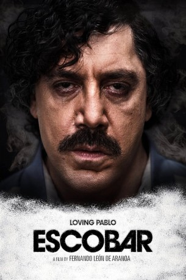

#9586 Loving Pablo
Alternativ: Escobar (Originaltitel)
 
 IMDB-Wertung: 6.3 / 10
IMDB-Wertung: 6.3 / 10  Metascore: 42
Metascore: 42 
Als Virginia Vallejo, die wohl berühmteste Reporterin Kolumbiens, 1981 auf einer elitären Party auftaucht, die von keinem Geringeren als dem Drogenbaron Pablo Escobar veranstaltet wird, kann sie noch nicht erahnen, welche Folgen dieser Abend für sie haben wird. Verführt von Pablos Charisma, lässt sich Virginia auf eine leidenschaftliche Affäre mit ihm ein – mit einem Mann, der Tausende Menschen töten ließ, Milliarden Dollar machte und folglich zum mächtigsten Drogenboss aller Zeiten aufstieg. Als politisch engagierte Nachrichtenerstatterin befindet sich Virginia auf einer Gratwanderung zwischen der DEA und ihrer feurigen Liebe zu Escobar – einer Liebe, die unter keinem guten Stern steht.
Jahr: 2017
Dauer: 123 Minuten
FSK: 16
Land: Spanien Studio: GEM EntertainmentTonspuren: DTS - ,
Untertitel: Deutsch,
Auflösung: 1080p (1920x808) Größe: 5652 MB
Genre: Drama, Krimi, Biographie
Regisseur: Fernando León de Aranoa
Drehbuch: Fernando León de Aranoa, Virginia Vallejo
Soundtrack: Federico Jusid
Darsteller:
 Javier Bardem als Pablo Escobar
Javier Bardem als Pablo Escobar Penélope Cruz als Virginia Vallejo
Penélope Cruz als Virginia Vallejo Peter Sarsgaard als Shepard
Peter Sarsgaard als Shepard- Julieth Restrepo als Maria Victoria Henao
 Óscar Jaenada als Santoro
Óscar Jaenada als Santoro- Ricardo Niño als Careta
- Pedro Calvo als Gatillero
- David Valencia als Santos
- Juan Sebastián Calero als Carlos Corral
 Atanas Srebrev als Agent Holland
Atanas Srebrev als Agent Holland Mark Basnight als Family Man
Mark Basnight als Family Man- Lillian Blankenship als Family Man's Daughter
- Nathan Cooper als Cop #1
 Colin Salmon als High State US Official
Colin Salmon als High State US Official- Francisco Bolívar als Gunman
- Juan Pablo Gamboa als Director TV
- David Ojalvo als FBI Agent
- Alejandro Ruiz als Soccer Announcer
- Jorge Monterrosa als Young Man
- Diana Wiswell als Nurse
- Fredy Yate als Pelado
- Joavany Alvarez als Ignacio Velarde
- Santiago Londoño als Hermosilla
- Quique Mendoza als Abel Monje
- Ariel Sierra als Salvador Martín
- Julio Nava als Garza
- Miguel Such als Victor
- Carlos Ramírez als Juan Pablo (8 years)
- Tania Valencia als Chantal
- Erik Rodriguez als Boy from the Slums
- Sara Deray als Paula
- Patrick Forster-Delmas als Producer
- Georgi Nikolov als Hitman #1
- Mihail Stoyanov als Hitman #2
- Andrew De La Rocha als Cop #2
- Santiago Soto als Ignacio Castro
- Bernardo García als Cali Delegate
- Oscar Rodriguez als Campaign Manager
- Simón Rivera als Rodrigo Lara Bonilla
- Carlos Manuel Vesga als La Plaga
- Álvaro García als Alfonso López Michelsen
- Catalina Londoño als Nurse
- Pedro Ochoa als Doctor Panama Clinic
- Douglas Ceballos als Judge Alarcón
- Luis Fernando Hoyos als Colonel Méndez
- Karine Amaya als Attractive Blonde Presenter
- Andrea Vidal als Teenager
- Heisel Mora als Airline Employee
- James Lawrence als Ambassador Williams
- Emilia Klayn als Secretary
Datei: X:\2017(G-M)\Loving Pablo (2017, FSK16, 1920x808).mkv seit 13.09.2018
Festplatte: HD 2017(A-Z)-2018(A-F)
 Es gibt insgesamt 148 Filme in der Gruppe '2017(G-M)'
Es gibt insgesamt 148 Filme in der Gruppe '2017(G-M)'